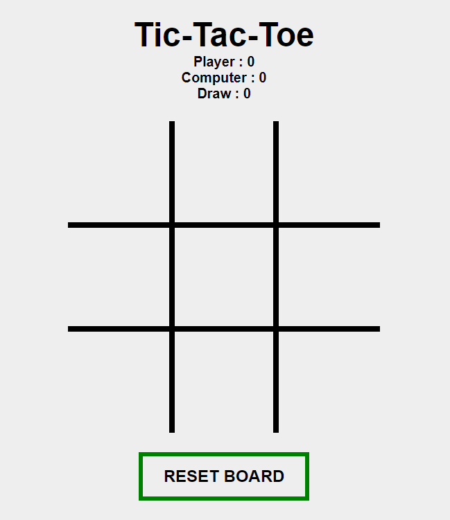

Table of contents
About The Project

Tech Stack: HTML, CSS, JavaScript

Tech Stack: HTML, CSS, JavaScript
To get a local copy up and running follow these simple steps.
There are no special requirements to play this game apart from having a Web Browser which supports HTML5 and CSS3.
git clone https://github.com/yelynn1/tictactoe.gitPlease file specific issues, bugs or feature requests in our issue tracker. Follow the issue template while creating a new issue.
Contributions are what make the open source community such an amazing place to be learn, inspire and create. Any contributions you make are greatly appreciated. If you wish to contribute a change to any of the existing features in this repo, please review our contribution guide and send a pull request.
We follow certain guidelines in order to maintain this repository. Please find our code of conduct and read it carefully.
Distributed under the MIT License. See LICENSE for more information.